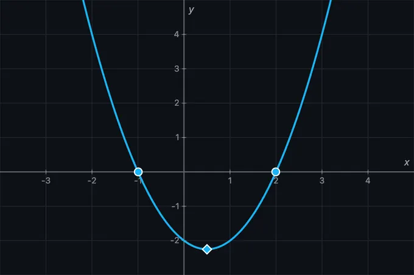
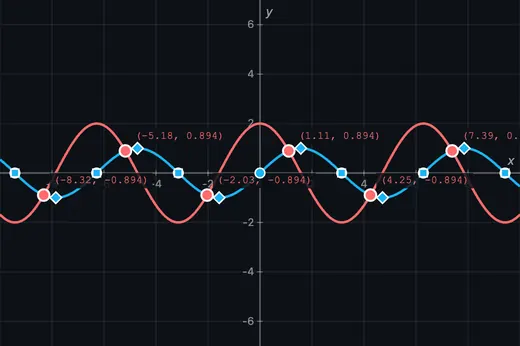
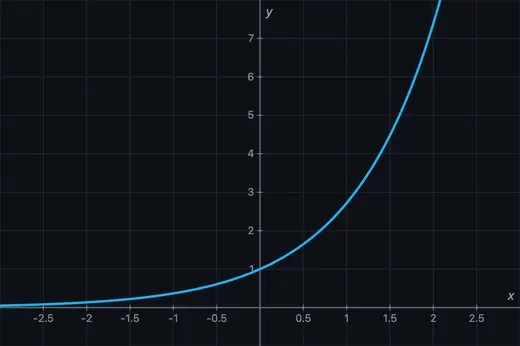

Math Function Graph Generator
3D Model — Math Function Graph Generator
Free online math graph generator — type a function and plot it instantly. Annotate on the curve, find roots, derivatives and integrals, export a PNG.
Plot Functions • Derivatives • Integrals • Roots • Zoom & Pan • Multiple Curves — Simulate • Explore • Practice • Quiz
1 Overview
Welcome to the Math Function Graph Generator — a free, browser-based tool for plotting mathematical functions and exploring their properties interactively. This simulator lets you enter one or more function expressions, visualise their graphs on a zoomable and pannable coordinate plane, and perform analysis including root finding, derivative overlays, definite integrals, and extrema detection. It is designed for mathematics students, engineering learners, and vocational education instructors — all without installation, signup, or licensing fees.
The calculator includes 22 preset functions covering polynomials, trigonometry, exponentials, logarithms, and special curves. It offers 4 interactive learning modes (Simulate, Explore, Practice, Quiz) and supports up to 8 simultaneous function plots with individual colour coding and visibility toggles.
2 Setting Up the Problem
When you first load the calculator, a default function (such as sin(x)) is plotted on the graph. To change it, type a new expression into the function input field in the sidebar. Press Enter or click outside the field to update the graph.
Click + Add Function to plot additional functions simultaneously. Each function gets its own colour. Use the visibility toggle next to each function entry to show or hide individual curves. Click the delete button to remove a function from the list.
Load a preset function from the presets bar to instantly see common mathematical functions like Quadratic, Sine, Exponential, or Normal Distribution plotted with appropriate viewing windows.
Use the tool bar above the graph to switch interaction modes: Move (pan and trace), Point (click to place coordinate points), Intersect (find where curves cross), and Tangent (draw tangent lines on curves). Click the gear icon to adjust axis ranges.
3 Expression Syntax
The calculator parses standard mathematical notation. Use x as the variable. Supported operations and functions include:
- Arithmetic:
+,-,*,/,^(power) - Trigonometric:
sin(x),cos(x),tan(x),asin(x),acos(x),atan(x) - Hyperbolic:
sinh(x),cosh(x),tanh(x) - Exponential & Log:
exp(x),ln(x),log(x)(base 10),log2(x) - Other:
sqrt(x),abs(x),ceil(x),floor(x),sign(x) - Constants:
pi,e
Implicit multiplication is supported: 2x is the same as 2*x, and 3sin(x) is the same as 3*sin(x). Parentheses control order of operations as expected.
Note: Trigonometric functions work in radians — sin(pi/2) = 1, not sin(90). log(x) is base‑10 and ln(x) is the natural (base‑e) logarithm.
4 Graph Interaction (Zoom, Pan, Trace)
Zoom: Hold Ctrl (or Cmd on Mac) and scroll the mouse wheel to zoom in and out. The zoom is centred on your cursor position. You can also use the + and − buttons in the graph toolbar overlay.
Pan: Click and drag on the graph to pan the viewing window in any direction. The axis labels and grid update in real time as you drag.
Trace: Hover your mouse over a plotted curve to see a crosshair and tooltip showing the exact (x, y) coordinates at that point. The nearest curve is automatically highlighted.
Reset: Click the reset button (↺) in the toolbar to return to the default viewing window. Click the fit button (◼) to automatically adjust the view to show all plotted curves.
5 Function Analysis (Roots, Extrema, Derivatives, Integrals)
Roots: The analysis section in the sidebar automatically lists the x-intercepts (zeros) of the currently selected function within the visible range. Roots are also marked on the graph with small circles.
Extrema: Local minima and maxima are detected and displayed in the analysis section. These are the points where the first derivative equals zero and the second derivative confirms the nature of the turning point.
Derivatives: Enable Show f′(x) to overlay the first derivative curve in a dashed line. Enable Show f′′(x) to overlay the second derivative. Derivatives are computed numerically using the central difference method with a small step size for accuracy.
Definite Integral: Enter lower and upper bounds in the Integral section of the sidebar. The area under the curve between these bounds is shaded on the graph, and the numerical value is displayed. The integral is computed using composite Simpson’s rule for accuracy.
6 Keyboard Shortcuts & Export
Keyboard shortcuts:
- Ctrl+Z (or Cmd+Z on Mac) — Undo the last action.
- Ctrl+Shift+Z — Redo a previously undone action.
- Delete / Backspace — Delete the selected annotation (shape or sketch).
- Escape — Close the on-screen math keyboard.
Right-click context menu: Right-click anywhere on the graph canvas to access:
- Export Graph (PNG) — saves the current graph as a high-resolution image.
- Export Data (CSV) — downloads a table of x and f(x) values for all plotted functions.
- Copy Expression — copies the selected function expression to the clipboard.
- Reset View — resets zoom and pan to the default window.
7 Tips & Tricks
- Use presets as starting points and then modify the expressions to experiment with transformations like shifting, scaling, and reflecting.
- Plot a function and its derivative side by side to visualise the relationship between slope and the original curve.
- When computing integrals, note that negative area (below the x-axis) subtracts from positive area — the displayed value is the net signed area.
- Zoom into regions of interest to see fine details like closely spaced roots or narrow extrema.
- Use abs(x) or floor(x) to explore piecewise-style functions without needing special syntax.
- Toggle Show Minor Grid for finer grid lines when you need more precise visual readings.
- The value table (accessible via the Show Table button below the graph) is useful for checking exact numerical values at regular intervals.
8 Freehand Sketch & Drawing
Sketch tool: Click the Sketch button in the toolbar. Draw freehand on the graph — the tool supports pressure-sensitive input for Apple Pencil and stylus devices. After each stroke, the tool auto-returns to Move mode. Click Sketch again to draw another stroke.
Colour & width: Click the ▾ dropdown arrow next to Sketch to choose from 6 colours (white, red, green, yellow, blue, orange) and 3 stroke widths (thin, medium, thick). A coloured dot on the button shows the active colour.
Coloured cursor: When Sketch or Shape tool is active, a coloured dot follows your cursor showing the active colour and size — so you always know what you are about to draw.
9 Shape & Text Annotations
Shape tool: Click the shape icon (shows ▭ by default) to draw geometric annotations. Open the ▾ dropdown to choose from 7 shapes:
- Arrow — line with arrowhead, great for pointing to features
- Line — straight line between two points
- Rectangle — click-drag to draw a box (default)
- Circle — click centre, drag to set radius
- Ellipse — click-drag for bounding box
- Double Arrow — arrowheads on both ends, ideal for indicating distances
- Text — click to place a text label, type and press Enter
Fill toggle: Switch between Outline and Filled modes for closed shapes (rectangle, circle, ellipse).
Selecting a shape from the dropdown auto-activates the tool. After drawing, the tool returns to Move mode automatically.
10 Select, Move, Resize & Rotate
Select: In Move mode, hover near any annotation edge to see a move cursor, then click to select. A dashed selection box with corner handles appears.
Move: Drag anywhere inside the selection box to reposition the annotation. On touch devices, tap to select then drag.
Resize: Drag any of the 4 corner handles to resize the shape. For text labels, resizing scales the font size proportionally.
Rotate: Click the purple rotation icon above the selection to rotate by 15° per click. The selection box rotates to match the shape orientation.
Duplicate: Click the cyan copy icon to create an offset duplicate of the selected annotation.
Delete: Click the red trash icon, press Delete/Backspace key, or right-click and select Delete Shape/Sketch.
Double-click text: Double-click any text label to edit its content inline.
11 Fullscreen & Annotation Toggle
Fullscreen mode: Click the ⛶ expand icon on the top-right of the graph canvas. The graph and sidebar fill the entire screen — ideal for classroom projectors and presentations.
Collapse sidebar: In fullscreen mode, click the ‹ chevron on the sidebar edge to collapse it, giving the graph maximum area. Click › to expand it again.
Exit fullscreen: Press Escape or click the ✕ close button. The sidebar automatically restores.
Annotation toggle: Click the 👁 eye icon in the bottom-left toolbar to hide all annotations (sketches, shapes, labels). Click again to show them. This lets you quickly compare annotated vs clean views.
Clear all: Click the 🗑 Clear button in the toolbar to remove all annotations. A confirmation dialog prevents accidental clearing.
12 Export & Sharing
Export PNG: Click the 📷 camera icon at the bottom-right of the graph. The exported image includes all annotations and a small mechsimulator.com watermark.
Export Clean: Right-click the graph and select Export Clean to save a PNG without any annotations — just the function curves and axes.
Export CSV: Right-click and select Export CSV to download a spreadsheet-compatible file with x and f(x) values for all plotted functions.
Copy coordinates: Hover over a curve so the trace point appears, then right-click and choose Copy Coordinates to copy that point on the curve (or Copy Expression for the selected function) to the clipboard.
13 Advanced Features
Implicit equations: Enter equations like x^2 + y^2 = 25 to plot circles, ellipses, and other implicit curves. Note that the x and y axes are scaled independently, so a circle appears as an ellipse unless the two axes happen to have equal scale (e.g. after adjusting the window so the units per pixel match).
Inequalities: Type y > sin(x) or y < x^2 to shade regions above or below curves.
Slider animation: Click the ▶ button next to any parameter slider to animate it. The parameter will sweep back and forth between its min and max values.
Interactive calculus tools: Use the f′ Deriv tool to draw the derivative between two selected points, or the ∫ Area tool to shade the integral region and see the computed area. Use the Tangent tool to draw tangent lines and see their equations.
Intersection finder: Use the Intersect tool to find where two curves cross. Intersection points are marked on the graph and listed in the analysis panel.
Math Function Graph Generator — Plot, Annotate and Analyse Functions Online

This free math graph maker turns an equation into a curve the moment you finish typing it. As a function plotter it handles polynomials, trigonometry, exponentials, logarithms and hyperbolics; as a graph creator it overlays derivatives and integrals, finds roots and extrema, and lets you annotate the result with freehand sketches, shapes, arrows and text labels. Built-in fullscreen classroom mode, PNG and CSV export, shareable graph links and full Apple Pencil and touch support make it a practical online grapher for lectures, homework and self-study — no sign-up, no installation.
Understanding Function Graphs
A function graph is the visual representation of every input-output pair (x, f(x)) plotted on a Cartesian coordinate plane. The horizontal axis represents the independent variable x, and the vertical axis represents y = f(x). By examining the shape of a graph, you can determine where the function is increasing or decreasing, where it crosses the x-axis (roots), where it reaches maximum or minimum values (extrema), and whether it is concave up or down. This graphing calculator plots functions with pixel-level accuracy, automatically adjusting resolution as you zoom in or out.


From Equation to Graph in Three Steps
Using the graph maker takes about ten seconds:
- Type the equation. Enter it in the
f(x)box in the sidebar — for examplex^2 - 3orsin(2*x). The curve is drawn as you type; there is no “plot” button to press. If you would rather not type symbols, open the Math Keyboard button below the input, or pick one of the 22 presets along the top. - Adjust the window. Scroll to zoom, drag to pan, or use the zoom controls. The axis numbering re-scales itself so the labels stay readable at every zoom level.
- Analyse or annotate. Roots, extrema and inflection points are marked automatically. Add a tangent, shade a definite integral, sketch on top of the curve, then export a PNG or copy a link that reopens the exact graph.
Because the graph creator accepts up to eight functions at once, you can compare a function against its transformation, its derivative, or a classmate’s answer on the same axes. Any letter other than x becomes an adjustable parameter with its own slider, so a*sin(b*x) gives you amplitude and frequency controls without editing the formula again.
Types of Functions You Can Plot
Polynomial functions like quadratics (x²), cubics (x³), and higher-degree polynomials reveal parabolic and serpentine curves. Trigonometric functions such as sin(x), cos(x), and tan(x) produce periodic waves essential in physics and engineering. Exponential functions (ex, 2x) model growth and decay phenomena. Logarithmic functions (ln(x), log(x)) appear in information theory, acoustics, and chemistry. Special functions like the normal distribution, step functions, and damped oscillations are available as one-click presets from 22 built-in templates.
Common Function Families and Their Graph Shapes
Most exam and coursework questions come from a short list of families. Recognising the shape before you plot is half the work — use this table to predict what the curve should look like, then type the equation into the plotter above and check.
| Family | General form | Shape | Domain | Range | What to look for |
|---|---|---|---|---|---|
| Linear | m*x + c | Straight line | all real x | all real y | Gradient m, y-intercept c |
| Quadratic | a*x^2 + b*x + c | Parabola | all real x | y ≥ vertex (a > 0) | Vertex at x = −b/2a; 0, 1 or 2 roots |
| Cubic | x^3 - a*x | S-shaped curve | all real x | all real y | Up to 3 roots; rotational symmetry about the origin |
| Reciprocal | a/x | Two hyperbola branches | x ≠ 0 | y ≠ 0 | Asymptotes at x = 0 and y = 0 |
| Square root | a*sqrt(x - b) | Half parabola, on its side | x ≥ b | y ≥ 0 (a > 0) | Starts abruptly at x = b; gradient is infinite there |
| Absolute value | a*abs(x - b) + c | V shape | all real x | y ≥ c (a > 0) | Sharp corner at (b, c) — not differentiable there |
| Exponential growth | a*e^(b*x), b > 0 | Rises ever more steeply | all real x | y > 0 (a > 0) | Horizontal asymptote y = 0 on the left |
| Exponential decay | a*e^(-b*x), b > 0 | Falls towards zero | all real x | y > 0 (a > 0) | Never reaches the axis; half-life is ln2/b |
| Natural logarithm | a*ln(b*x) | Rises, ever more slowly | x > 0 (b > 0) | all real y | Vertical asymptote at x = 0; crosses y = 0 at x = 1/b |
| Sine / cosine | a*sin(b*x) | Repeating wave | all real x | −|a| to |a| | Amplitude |a|, period 2π/|b| |
| Tangent | tan(x) | Repeating branches | x ≠ π/2 + nπ | all real y | Vertical asymptotes every π; period is π, not 2π |
| Logistic | L/(1 + e^(-k*(x - m))) | S-curve between two levels | all real x | 0 to L | Inflection at x = m, where growth is fastest |
| Gaussian (normal) | a*e^(-((x-b)^2)/(2*c^2)) | Bell curve | all real x | 0 to a (a > 0) | Peak at x = b; width set by c |
| Step (floor) | floor(x) | Staircase | all real x | integers | Jump discontinuity at every integer |
Function Plotter Syntax — How to Type Any Equation
The function drawer parses ordinary maths notation, so most expressions work exactly as you would write them on paper.
| Rule | Write | Meaning |
|---|---|---|
| Implicit multiplication | 2x, 3sin(x) | The * is inserted for you |
| Powers | x^2, e^(2*x) | Bracket compound exponents |
| Constants | pi, e | 3.14159… and 2.71828… |
| Absolute value | abs(x) or |x| | Either form is accepted |
| Factorial | 5! | Postfix, whole numbers only |
| Parameters | a, b, k, L… | Any letter but x gets its own slider |
Angles are in radians, so sin(pi/2) is 1. log is base-10 and ln is the natural logarithm.
Supported Functions Reference
| Category | Functions | Example |
|---|---|---|
| Trigonometric | sin, cos, tan, asin, acos, atan | sin(2*x) |
| Hyperbolic | sinh, cosh, tanh | cosh(x) |
| Logarithmic | ln, log, log2, log10 | ln(x+1) |
| Power & Root | x^n, sqrt, cbrt | sqrt(x^2+1) |
| Rounding | floor, ceil, round, abs | floor(x/2) |
| Other | min, max, sign, exp, factorial (!) | 5! |
Interactive Calculus Tools
Calculus concepts come alive with interactive tools. The Tangent tool lets you click any point on a curve to draw the tangent line and see its equation. The f′ Deriv tool lets you select two points to display the derivative curve f′(x) only in that interval. The ∫ Area tool lets you click two points to shade the definite integral region and see the computed area value directly on the graph. You can also enable the full f′(x) and f′′(x) overlays in Display Options to see derivative curves across the entire visible range. All calculations use Simpson’s rule and central differences for numerical accuracy.
Graph Annotation and Drawing Tools
This graphing calculator doubles as a math whiteboard for teachers and presenters. The Sketch tool lets you freehand draw directly on the graph with pressure-sensitive support for Apple Pencil and stylus devices. Choose from 6 colours (white, red, green, yellow, blue, orange) and 3 stroke widths. The Shape tool provides 7 geometric annotation types: arrows, straight lines, rectangles, circles, ellipses, double arrows (for measuring), and text labels. Shapes can be outlined or filled with semi-transparent colour. Every annotation can be selected, moved, resized, rotated (in 15° increments), duplicated, and deleted — with full undo/redo support (Ctrl+Z). The annotation layer can be toggled on and off with one click for clean presentations.
Fullscreen Classroom Mode
Enter fullscreen mode via the expand icon on the graph canvas. The graph and sidebar fill the entire screen — perfect for classroom projectors and interactive whiteboards. The sidebar can be collapsed with a single click to give the graph maximum screen area, then expanded again when you need to adjust functions or view analysis. All tools — sketch, shapes, zoom, pan, and export — work seamlessly in fullscreen. Press Escape or click the close button to exit. Compatible with all major browsers, iPad Safari, and Chromebook.
Export and Share Your Graphs
Click the camera icon at the bottom-right of the graph to export a high-resolution PNG image with all annotations and a mechsimulator.com watermark. For a clean version without annotations, right-click the graph and select Export Clean. You can also export function data as CSV for use in spreadsheets or reports. The context menu (right-click) provides quick access to copy the hovered curve point’s coordinates, copy expressions, export options, and view controls.
The share button copies a link that carries the whole graph — every function, every parameter value and the exact zoom window — encoded in the URL itself. Nothing is uploaded and no account is needed; whoever opens the link sees precisely the graph you were looking at. It is the quickest way to send a worked answer to a student, paste a curve into a lesson plan, or hand a colleague a starting point they can keep editing.
Root Finding and Critical Point Analysis
Roots (zeros) are automatically detected where f(x) = 0 and marked on the graph with circles. Local extrema (maxima and minima) are detected via derivative sign changes and displayed with diamond markers. Inflection points where concavity changes are shown as small squares. The analysis panel in the sidebar lists all detected special points in a clean grid layout. Click any analysis chip to highlight and animate the corresponding point on the graph with a pulsing indicator and crosshair lines.
Transformations and Function Comparison
Vertical shifts (f(x) + c), horizontal shifts (f(x − h)), scaling (a·f(x)), and reflection (−f(x)) are all easy to visualise by plotting multiple functions simultaneously. Each function gets a unique colour and individual visibility toggle. Use parameter sliders to animate transformations in real time — click the play button to sweep a parameter back and forth. Try plotting sin(x) and 2·sin(3x − 1) + 1 together to see amplitude, frequency, phase, and vertical shift all at once.
Applications in Engineering, Science, and Education
This interactive graphing tool serves students, teachers, and engineers across disciplines. In mechanical engineering, plot stress-strain curves, beam deflection equations, and vibration response functions. In electrical engineering, visualise transfer functions and signal waveforms. In thermodynamics, explore equations of state and cycle diagrams. Teachers use the annotation tools to mark up graphs during lectures, circle important features, draw attention arrows, and add explanatory text labels — all while students follow along on the projected graph. The 4 learning modes (Simulate, Explore, Practice, Quiz) support self-paced study and classroom assessment.
Touch and Stylus Support
Every feature works with mouse, finger, and stylus input. On iPad and tablet devices, one-finger touch draws in Sketch mode, two-finger pinch zooms, and one-finger drag pans in Move mode. Apple Pencil pressure sensitivity varies the stroke width for natural handwriting. All buttons meet the 44px minimum touch target size recommended by Apple and Google for comfortable mobile use. The toolbar scrolls horizontally on narrow screens with smooth momentum scrolling.
Explore Related Simulators
If this graph maker was useful, the closest companions are the Calculus Visualizer, which takes limits, derivatives and integrals further than the overlays here, and the Area Under a Curve Calculator for numerical integration by the trapezium and Simpson methods. For linear algebra there is the Matrix Multiplication Visualiser, and for discrete maths the Karnaugh Map Solver and Logic Gates Simulator. The full set is on the Mathematics & Graphing Tools page.
Plotting something from a physics or engineering course? The curves in Projectile Motion, Simple Harmonic Motion and Stress–Strain are the same function families in the table above, applied to real quantities.